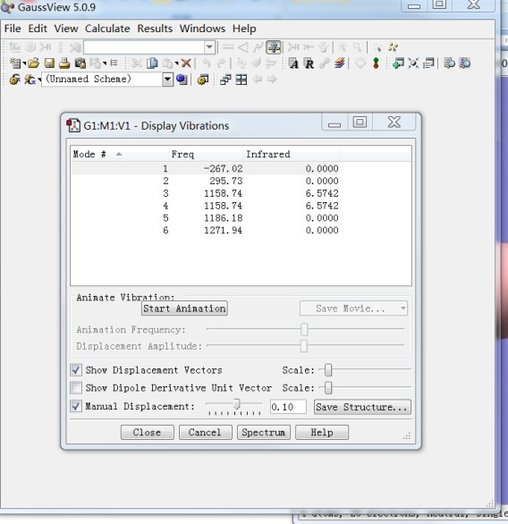

B4.square.gjf文件：
%nprocshared=16
%mem=16GB
%chk=B4.chk
#p opt freq b3lyp/6-31g
B4
0 1
B 1.21435106 -0.69628856 -0.10869034
B -0.36399099 1.17989093 -0.17470963
B 1.35821264 1.03729467 0.15887841
B -0.51861172 -0.54166004 0.15688456
g09<B4.square.gjf>B4.square.log,生成B4.square.log文件，在ResultsSummary中看总能量，对称性，是否有虚頻。假如有虚頻： Results->Vibrations, 消除虚頻（负频率），产生新的结构，重新优化和计算频率，直到无虚頻。 
B4.nbo.gjf:
%nproc=16
%mem=16GB
%chk=B4.chk
#p b3lyp/6-31g polar scf=tight pop(full,nboread) density=current
B4_NBO
0 1
B 0.00000000 0.94287500 0.00044800
B 0.00000000 -0.94287500 0.00044800
B 1.22153200 0.00000000 -0.00044800
B -1.22153200 0.00000000 -0.00044800
$NBO DMNAO AONAO BNDIDX archive file=B4.nbo $END
BNDIDX 是NBO键级分析，DMNAO关键词输出的NAO密度矩阵,AONAO为AO到NAO转换，DMNAO和AONAO为AdNDP分析做准备。 g09<B4.nbo.gjf>B4. nbo.log生成B4.nbo.log文件及B4.chk文件，执行fromchk B4.chk B4.fchk, 生成B4.fchk。 B4.nbo.log文件会给出键级分析（使用NBO3.0）不太准，可使用B4.nbo.47文件和NBO高版本进一步分析。 B4.fchk 在Gaussian打开，点击 按钮，查看MO轨道。 直接保存MO图，或者打开ResultsSurface/Contour, 保存为cube文件，在Molkel可以画出更漂亮的MO轨道图。
B4.nbo.47文件修改， 初始：
$GENNBO NATOMS=4 NBAS=36 UPPER BODM $END
$NBO $END
$COORD...改为：
$GENNBO NATOMS=4 NBAS=36 UPPER BODM $END
$NBO NRT BNDIDX $END
$COORD...执行： gennbo B4.nbo B4.nbo.47，生成B4.nbo.nbo 文件，包含键级，自然成键分析，共振结构等。
有两种途径进行AdNDP分析：
具体分析过程参照： http://emuch.net/html/201205/4484349.html
启动Multiwfn，输入B4.nbo.log的文件路径，然后选主功能14就进入了AdNDP分析模块。Multiwfn会先载入一些NAO信息和以NAO为基的密度矩阵，然后自动扣除内核NAO轨道对密度矩阵的贡献，然后就会看到一堆选项。
由于B4这个体系非常简单，所以只需要用穷举搜索的方法就行了。 首先选2去穷举搜索所有单中心轨道，但是没有找到占据数高于阈值的轨道，这也是理所当然，从直觉上就知道B4不可能有孤对电子。当前的阈值就是选项4上显示的值，目前版本中默认为1.7。
接下来再按2，就开始穷举搜索双中心轨道， 经过穷举搜索，从菜单前头显示的候选轨道列表中得知发现了4个双中心轨道的占据数都高于阈值，它们的占据数都高达1.97，因此是理想的2c-2e轨道，此时选0,然后输入4，就把这两个轨道从候选列表中取了出来成为AdNDP轨道。继续穷举搜索其它多中心键。（注：当前的候选轨道列表总是自动显示在菜单的前头，为了避免其信息碍事，只有选择5查看AdNDP轨道信息一览表或者选13查看剩余电子分布时没显示出来。但任何时候都可以从中用选项0选取轨道，或者用选项8和10来分别查看它们和导出它们）现在可以选7来观看这两个AdNDP轨道。Multiwfn首先会读取Guassian输出文件中的原始基函数与NAO间的变换矩阵，然后让你输入相应的fch文件的路径，假设你已经把B4.nbo.fchk放到了B4.nbo.log相同的目录下，那么Multiwfn就会直接读取。读取完毕后，你会看到一个图形界面，和Multiwfn主功能0提供的界面一模一样，可以观看分子结构，在右下角选相应的AdNDP轨道编号就能立刻显示出等值面图。（大部分是http://emuch.net/html/201205/4484349.html网页上的原话，呵呵），最终可分析得到4个双中心键和两个4中心键。
使用Boldyrev课题组的adNDP程序。http://ion.chem.usu.edu/~boldyrev/adndp.php
需要文件包括：
%nproc=16
%mem=16GB
%chk=B4_CMO.chk
#p b3lyp/6-31g scf=tight pop(full) density=current gfoldprint
B4_CMO
0 1
B 0.00000000 0.94287500 0.00044800
B 0.00000000 -0.94287500 0.00044800
B 1.22153200 0.00000000 -0.00044800
B -1.22153200 0.00000000 -0.00044800
得到的B4.cmo.log.
3. AdNDP.in:
NBO filename
g09.nbo.log
Number of atoms
4
mount of valence electronic pairs
6
Total amount of electronic pairs
10
Total amount of basis functions
36
Amount of basis functions on each atom
9
9
9
9
Occupation number thresholds
0.1
0.1
0.1
0.1
0.1
0.1
CMO filename
B4.cmo.log执行 AdNDP.exe, 生成NDP_g09.nbo.log，内容
NBOAmnt= 10
1 1 0 0 0 Occ 1.99808666
2 2 0 0 0 Occ 1.99808666
3 3 0 0 0 Occ 1.99800394
4 4 0 0 0 Occ 1.99800394
5 1 3 0 0 Occ 1.97660674
6 1 4 0 0 Occ 1.97660674
7 2 3 0 0 Occ 1.97660674
8 2 4 0 0 Occ 1.97660674
9 1 2 3 4 Occ 2.00009936
10 1 2 3 4 Occ 1.99993854
（键序号 涉及电子nc-2e 还有占据数ON）
...
Residual Density 0.1012还有重写系数的B4.cmo.log文件用来画AdNDP分布。
B4.pes.gjf:
%nproc=16
%mem=16GB
%chk=B4.chk
#p b3lyp/6-31g td=(nstates=6,50-50) scf=direct
B4_pes
0 1
B 0.00000000 0.94287500 0.00044800
B 0.00000000 -0.94287500 0.00044800
B 1.22153200 0.00000000 -0.00044800
B -1.22153200 0.00000000 -0.00044800
得到B4.pes.log,其中：
Excited State 1: Triplet-A1 0.9964 eV 1244.32 nm f=0.0000 <S**2>=2.000
10 -> 11 0.77272
10 <- 11 0.32512
This state for optimization and/or second-order correction.
Total Energy, E(TD-HF/TD-KS) = -99.0666868570
Copying the excited state density for this state as the 1-particle RhoCI density.
Excited State 2: Triplet-B1 1.0373 eV 1195.27 nm f=0.0000 <S**2>=2.000
6 -> 11 -0.10739
10 -> 12 0.79424
10 <- 12 0.38004
Excited State 3: Triplet-A2 2.3791 eV 521.15 nm f=0.0000 <S**2>=2.000
7 -> 12 -0.10146
9 -> 11 0.70106
Excited State 4: Triplet-B2 2.5560 eV 485.08 nm f=0.0000 <S**2>=2.000
7 -> 11 -0.20588
9 -> 12 0.66845
10 -> 15 -0.13883
Excited State 5: Triplet-A1 2.6993 eV 459.32 nm f=0.0000 <S**2>=2.000
8 -> 11 0.70544
Excited State 6: Triplet-B1 2.8709 eV 431.86 nm f=0.0000 <S**2>=2.000
8 -> 12 0.52131
10 -> 13 0.48849
Excited State 7: Singlet-A2 3.0647 eV 404.56 nm f=0.0000 <S**2>=0.000
9 -> 11 0.70678
Excited State 8: Singlet-A1 3.2895 eV 376.91 nm f=0.0000 <S**2>=0.000
10 -> 11 0.70664
10 <- 11 -0.10324
Excited State 9: Singlet-A1 3.3287 eV 372.47 nm f=0.0009 <S**2>=0.000
8 -> 11 0.70616
Excited State 10: Singlet-B2 3.4810 eV 356.17 nm f=0.0062 <S**2>=0.000
9 -> 12 0.70151
Excited State 11: Singlet-B1 3.5350 eV 350.73 nm f=0.0000 <S**2>=0.000
8 -> 12 0.69476
10 -> 13 -0.13252
Excited State 12: Singlet-B1 3.6670 eV 338.11 nm f=0.0952 <S**2>=0.000
8 -> 13 -0.31591
10 -> 12 0.62960R(r)=Nr^{n − 1}e^{−\zeta r} where
R_{2s}(r)=C_1re^{-\zeta _1r}+C_2re^{-\zeta _2 r}
G_{nlm}(r,\theta,\psi)=N_nr^{n-1}e^{-\alpha r^2}Y^m_l(\theta,\psi)
| Basis | Num | Basis | Num | Basis | Num |
|---|---|---|---|---|---|
| STO-3G | 5 | 6-31G | 9 | 6-311G | 13 |
| 3-21G | 9 | 6-31G* | 15 | 6-311G* | 18* |
| 4-31G | 9 | 6-31+G | 19 | 6-311+G* | 22* |